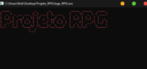

Funções: Criando o Menu Principal e a Estrutura Base do Nosso RPG
Na primeira parte do projeto, criei um novo projeto no Dev C++ chamado 'project' e adicionei o arquivo 'antoniel_funcoes' com funções auxiliares. Entre elas estão 'mudarCor' para alterar cores facilmente, 'animacao' e 'print_animado' para exibir texto linha por linha, 'introducao' com um texto inicial contando a história do jogo, e outras funções que guardam desenhos ASCII como a arte da UERN e o título do Projeto RPG, mantendo o código principal organizado.
Structs: O Arquétipo do Herói (Definindo Nome, HP e Dano)
Texto
Strings em Batalha: Lidando com Nomes, Comandos e Mensagens do Jogo
Texto
Bônus: Salvando o Jogo no HD (Manipulação de Arquivos)
Texto
Ponteiros Nível 1: Introdução ao Endereço e o Início do Controle Total
Texto
Ponteiros para Structs: Passando o Herói para a Batalha por Referência (->)
Texto
Alocação Dinâmica: Recrutando um Novo Herói sob Demanda com malloc()
Texto
Grupo Flexível: Aumentando a Party Dinamicamente com realloc()
Texto
Bônus Avançado: Recursividade na Navegação de Mapas ou Menus Complexos
Texto
Finalização: Destruindo a Party (Liberando Toda a Memória Alocada)
Texto